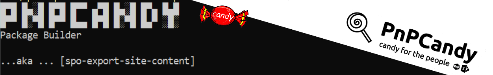

Export all content from an existing SharePoint site

Summary
This script allow us to export all content from an existing SharePoint site.
Main idea here is to actually export content from one site and import to other site.
The script will crawl Document libraries, export content to a local folder and prepare a pnptemplate ready to import

Outputs
- pnpcandy-files folder
root folder, contains logfile and zip file (entire created package) - pnp folder
contains the pnptemplate with all content - raw folder
contains all content assets - Import-Content-UsingAddPnPFile.ps1 file
script to import raw folder content to the new site, using Add-PnPFile cmdlet] - Import-Content-UsingPnPTemplate.ps1 file
script to import pnp folder content to the new site, using the PnP Provisioning engine]
The script is a subset of the SPO powershell packages with content (PnPCandy) concept already been used across many projects.
Excelsior, hum? :P
[CmdletBinding()]
param (
[Parameter(Mandatory = $false, HelpMessage = "Enter a package name")]
[String]$PackageName = "SiteContent",
[Parameter(Mandatory = $true, HelpMessage = "Site url (content will be exported from this site)")]
[string] $Url,
[Parameter(Mandatory = $false, HelpMessage = "If True, content will be zipped")]
[bool]$CreatePackage = $true,
[Parameter(Mandatory = $true, HelpMessage = "Folder where the content will be downloaded to")]
[string]$ExportFolder ,
[Parameter(Mandatory = $false, HelpMessage = "String[] for selecting specific document libraries")]
[String[]] $Includes = @(),
[Parameter(Mandatory = $false, HelpMessage = "Log file name. By default, this options is AUTO _ logfile will be created with a default name ")]
[string] $Logfile = "AUTO"
)
begin {
## General functions
# Write message to string or log file if its defined
function Write-Log($msg) {
$message = "$($env:MainFunctionName)$($env:FunctionName) $msg"
$message = $message.Trim()
Write-Host ($message)
if ($Logfile.Length -gt 0) {
Add-Content -Path $Logfile -Value $message -Force
}
}
## display initial message on the script
function Initial-Message() {
$env:functionName = ""
$env:MainFunctionName = ""
$msg = "`n`r
█▀█ █▄░█ █▀█ █▀▀ ▄▀█ █▄░█ █▀▄ █▄█
█▀▀ █░▀█ █▀▀ █▄▄ █▀█ █░▀█ █▄▀ ░█░ `nPackage Builder `n`n...aka ... [spo-export-site-content]
`n"
$msg += ('#' * 70) + "`n"
Write-Log $msg
}
# Get folders and files in predetermined folderUrl . Entire stack of assets is added byref to the $outAssets
Function Get-FoldersFiles($folderUrl, [ref] $outAssets) {
$items = Get-PnPFolderItem -FolderSiteRelativeUrl $folderUrl -ItemType All
# Loop through the folders
foreach ($asset in $items) {
# dont collect forms document library
if ($asset.Name -ne "Forms") {
$newItemURL = $folderUrl + "/" + $asset.Name
$item = New-Object PSObject
$item | Add-Member -MemberType NoteProperty -Name 'ServerRelativeUrl' -Value $asset.ServerRelativeUrl
$item | Add-Member -MemberType NoteProperty -Name 'LocalPath' -Value ($newItemURL -replace "/", "\")
$item | Add-Member -MemberType NoteProperty -Name 'IsFolder' -Value ($null -ne $asset.ItemCount)
$item | Add-Member -MemberType NoteProperty -Name 'Leaf' -Value ($newItemURL | Split-Path -Leaf )
$item | Add-Member -MemberType NoteProperty -Name 'RemotePath' -Value ($newItemURL | Split-Path) #(($newItemURL | Split-Path) -replace "\\", "/")
[Hashtable] $t = $outAssets.Value
$t.Add($asset.ServerRelativeUrl, $item)
if ($null -ne $asset.ItemCount) {
Write-Log " Collecting $newItemURL"
Get-FoldersFiles -folderUrl $newItemURL -outAssets ([ref]$t)
}
}
}
}
# Export SPO files to a local folder
Function Export-Assets {
$env:functionName = "[EXP-ASSETS]"
Write-Log " Start"
Write-Log " Content will be exported to $rawPath"
## Get all document libraries
$doclibs = Get-PnPList | where-object { $_.BaseTemplate -eq 101 -and $_.Hidden -eq $false }
if ($Includes.length -gt 0) {
$doclibs = $doclibs | where-object { $_.Title -in $Includes }
Write-Log " Gathering [$Includes] Document Libraries"
}
$files = "Write-Host 'Attention: Document libraries should exists already on the url.' `n"
$files += "Write-Host 'This script dont create the document libraries or replace invalid chars in the filenames'`n"
$doclibs.foreach({
$list = $_
Write-Log " $($list.Title) Document Library"
Write-Log " Collecting all files and folders"
#Create hashtable to be used within by ref in functions
[HashTable]$htItems = @{}
Get-FoldersFiles $list.Title -outAssets ([ref]$htItems)
#convert hashtable value to array
$items = $htItems.GetEnumerator().ForEach({ $_.Value }) | Sort-Object IsFolder -Descending
Write-Log " All files and folders collected"
Write-Log " Export [$($list.Title)] Content started ..."
$items.foreach({
$item = $_
if ($item.IsFolder) {
$itemPath = "$rawPath\$($item.LocalPath)"
New-Item -Path $itemPath -ItemType Directory -Force | Out-Null
Write-Log " [$itemPath ] created !"
}
else {
$itemPath = "$rawPath\$($item.LocalPath | Split-Path)"
Get-PnPFile -Url $item.ServerRelativeUrl -Path $itemPath -Filename $item.Leaf -AsFile -Force | Out-Null
$goodFile = ""
FixInvalidChars -fileName $item.Leaf -fileFullName "$itemPath\$($item.Leaf)" -out ([ref] $goodFile)
Write-Log " [$itemPath\$($goodFile)] created !"
## files is used to create a script to import files with PnPCmdlet Add-PnPFile
$files += "Add-PnPFile -Path " + """" + ".\raw\" +$item.RemotePath + "\" + $goodFile + """" + " -Folder '$($item.RemotePath)' `r`n"
}
})
Write-Log " Export [$($list.Title)] Content ended !"
})
Write-Log " End"
Write-Log " Creating Ps1 file for adding files through pnp cmdlets "
$scriptFile = "$path\Import-Content-UsingAddPnPFile.ps1"
$scriptFileContent = "`$ErrorActionPreference = 'Continue'`r`n"
$scriptFileContent += 'Set-Location $PSScriptRoot' + "`r`n"
$scriptFileContent += '$siteUrl="[ADD YOURSITE URL HERE]" ' + "`r`n"
$scriptFileContent += 'Connect-PnPOnline -Url $siteUrl -Interactive ' + "`r`n"
$scriptFileContent += $files
$scriptFileContent += 'Disconnect-PnPOnline' + "`r`n"
Set-Content -Path $scriptFile -Value $scriptFileContent -Force
}
function FixInvalidChars($fileName,$fileFullName, $out) {
# set of invalid characters
$REGEX_INVALID_FILEFOLDER_NAME_CHARS = '[~#%&*{}\:<>?/|""\t\r\n]';
$REGEX_REPLACEMENT_CHAR = "_"
$itemNewPath = $fileName
#Test if filename has invalid chars
$fileNameNotOk = $fileName -match $REGEX_INVALID_FILEFOLDER_NAME_CHARS
if ($fileNameNotOk) {
Write-Log " File: [$fileName] : has invalid characters $REGEX_INVALID_FILEFOLDER_NAME_CHARS"
$match = [regex]::matches($fileName, $REGEX_INVALID_FILEFOLDER_NAME_CHARS)
$itemPathOriginal = $fileFullName
#invalid characters as replaced by $REGEX_REPLACEMENT_CHAR
$match.ForEach({
$itemNewPath = $itemNewPath -replace $_.Captures.Value, $REGEX_REPLACEMENT_CHAR
})
$fileLoop = $true
$tmpReplaceChar = ""
# rename invalid file with new name :loop until valid
while ($fileLoop) {
try {
Rename-Item -Path $itemPathOriginal -NewName $itemNewPath
$fileLoop = $false
}
catch {
#if a file already exists with that name , it will renamed until error is not thrown
$tmpReplaceChar += $REGEX_REPLACEMENT_CHAR
$itemNewPath = ($itemNewPath.replace($REGEX_REPLACEMENT_CHAR, $tmpReplaceChar) | Split-path -Leaf)
$fileLoop = $true
}
}
}
$out.Value = $itemNewPath
}
#create New-PnPTemplate with collected files
Function New-PnPTemplate {
$env:functionName = "[NEW-PNPTEMPLATE]"
# Get PnPSiteTemplate
$pnpTemplate = Get-PnPSiteTemplate -OutputInstance -Handlers Lists -IncludeAllPages
$PnPTemplateFile = "$pnpPath\$PackageName.xml"
Save-PnPSiteTemplate -Out $PnPTemplateFile -Template $pnpTemplate -Force
$originalPath = Get-Location
Set-Location $pnpPath
Write-Log " Start"
Write-Log " PnPTemplate will be creating adding files from $rawPath"
$items = Get-ChildItem -Path $rawPath -Recurse -File -Exclude "Import-Content-UsingAddPnPFile.ps1" | `
Select-Object Name, FullName, DirectoryName, `
@{ Name = 'RemotePath'; Expression = { ($_.DirectoryName).Replace($rawPath + "\", "").Replace("\", "/") } }
Write-Log " Add files Start"
$items.foreach({
$item = $_
Add-PnPFileToSiteTemplate -Path $PnPTemplateFile -Source $item.FullName -Folder $item.RemotePath
Write-Log " File:[$($item.FullName)] added!"
})
Write-Log " Add files End"
Write-Log " PnPTemplate file created : $pnpPath\$PackageName.xml"
Write-Log " Creating Ps1 file for apply pnptemplate execution "
$scriptFile = "$path\Import-Content-UsingPnPTemplate.ps1"
$scriptFileContent = "`$ErrorActionPreference = 'Continue'`r`n"
$scriptFileContent += 'Set-Location $PSScriptRoot' + "`r`n"
$scriptFileContent += '$siteUrl="[ADD YOURSITE URL HERE]" ' + "`r`n"
$scriptFileContent += 'Connect-PnPOnline -Url $siteUrl -Interactive ' + "`r`n"
$scriptFileContent += 'Invoke-PnPSiteTemplate -Path .\pnp\' + $PackageName + '.xml' + "`r`n"
$scriptFileContent += 'Disconnect-PnPOnline' + "`r`n"
Set-Content -Path $scriptFile -Value $scriptFileContent -Force
Write-Log " End"
Set-Location $originalPath
}
## Zip all the content
Function New-ZipPackage {
$env:functionName = "[PCK-ASSETS]"
Write-Log " Start"
$packageName = "$ExportFolder\$PackageName" + "-pnpcandy-" + ($StarCurrentTimeStamp).ToString("yyyyMMddHHmmsss") + ".zip"
Write-Log " Packaging [$path] to [$packageName]"
[io.compression.zipfile]::CreateFromDirectory($path, $packageName)
Write-Log " End"
}
## Start Script
$ErrorActionPreference = "Stop"
Import-Module PnP.PowerShell
$StarCurrentTimeStamp = Get-Date
$ExportFolder = (Resolve-Path -Path $ExportFolder).Path
$defaultLogFile = "$ExportFolder\$PackageName-pnpcandy-" + ($StarCurrentTimeStamp).ToString("yyyyMMddHHmmsss") + ".log"
$path = "$ExportFolder\pnpcandy-files"
$rawPath = $path + "\raw"
$pnpPath = $path + "\pnp"
New-Item -Path $rawPath -ItemType Directory -Force | Out-Null
New-Item -Path $pnpPath -ItemType Directory -Force | Out-Null
if ($Logfile -eq "AUTO") {
$Logfile = $defaultLogFile
}
Initial-Message
#Log is using $env variable as msg prefix . Eggxample
$env:MainFunctionName = "[PNPCANDY-PKGBUILDER]"
$env:FunctionName = ""
New-Item -Path $path -ItemType Directory -Force | Out-Null
Write-Log "Start"
Write-Log " Connecting to $Url"
Connect-PnPOnline -Url $Url -Interactive
}
process {
Export-Assets
New-PnPTemplate
if ($CreatePackage) { New-ZipPackage }
}
end {
$env:FunctionName = ""
Write-Log " Disconnecting"
Disconnect-PnPOnline
$EndCurrentTimeStamp = Get-Date
Write-Log (" Execution time :" + ($EndCurrentTimeStamp - $StarCurrentTimeStamp) + "")
if ($Logfile.Length -gt 0) {
Write-Log " Logfile : $Logfile"
}
Write-Log "End"
}
Check out the PnP PowerShell to learn more at: https://aka.ms/pnp/powershell
The way you login into PnP PowerShell has changed please read PnP Management Shell EntraID app is deleted : what should I do ?
Contributors
| Author(s) |
|---|
| Rodrigo Pinto |
Disclaimer
THESE SAMPLES ARE PROVIDED AS IS WITHOUT WARRANTY OF ANY KIND, EITHER EXPRESS OR IMPLIED, INCLUDING ANY IMPLIED WARRANTIES OF FITNESS FOR A PARTICULAR PURPOSE, MERCHANTABILITY, OR NON-INFRINGEMENT.